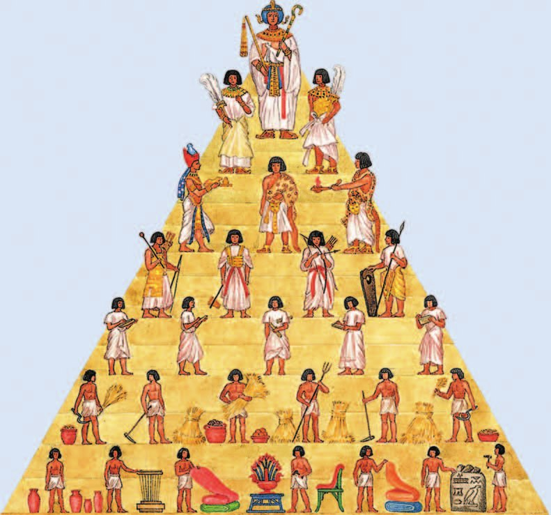
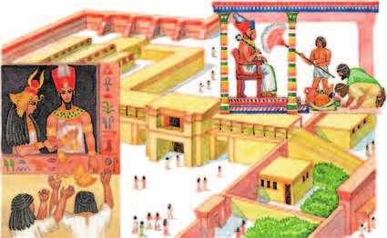
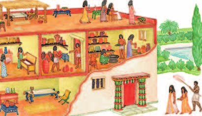
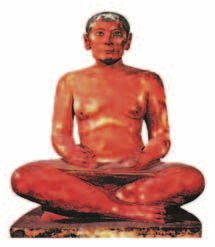
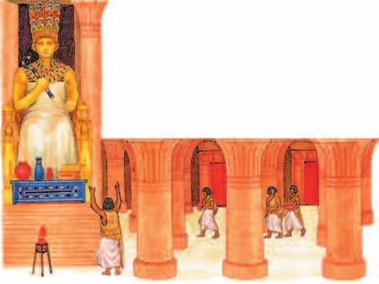
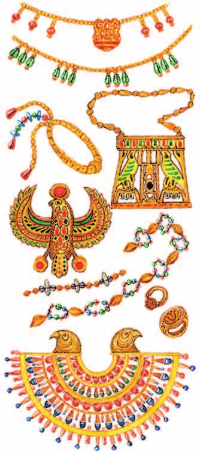
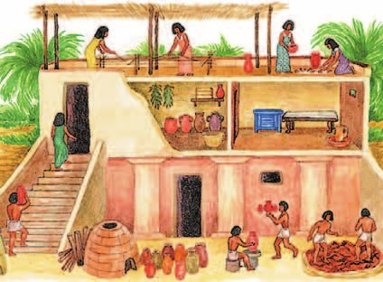
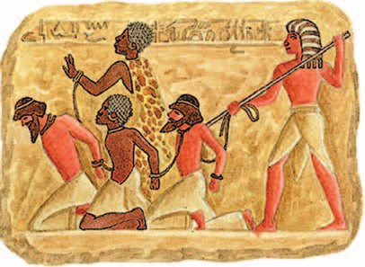

▲ Найди на рисунке фараона, жрецов, воинов, писцов, земледельцев и ремесленников. Кого больше всего?
Фараон
В Древнем Египте каждый человек занимал своё место — в зависимости от того, какие у него обязанности и права. Такое устройство называют , а общество Египта часто рисуют в виде пирамиды.
На самой вершине стоял правитель — . Власть переходила к нему по наследству.
Египтяне верили, что фараона утверждает на престоле бог солнца . Значит, и сам фараон — бог: он связан с другими богами и пользуется их поддержкой.
Поэтому законного фараона нельзя было свергнуть силой — даже самого плохого. Это значило бы пойти против воли богов и навлечь на себя великие бедствия.
Вся земля в Египте принадлежала государству. Наделы государственной земли царь мог жаловать военным, жрецам, чиновникам — иногда большие участки вместе с живущими на них крестьянами.
Жили фараоны в огромных дворцах. Тот, кому разрешали войти, видел фараона на троне с символами власти — скипетром и плетью. Голову венчала двойная корона: знак власти над Верхним и Нижним Египтом.
Подданные падали «на свои животы» и целовали землю перед ногами фараона. Высокой честью считалось разрешение поцеловать ему ногу.
Фараон обладал неограниченной властью и командовал войском. Он мог возвысить или наказать любого человека. Такую форму правления — когда власть царя ничем не ограничена — называют .
В древнеегипетском обществе каждый человек занимал определённое место в зависимости от своих обязанностей и прав. Общество в Древнем Египте часто изображают в виде пирамиды. Во главе государства стоял правитель — фараон. Власть фараона передавалась по наследству. Жители Египта считали, что фараоны утверждаются на престоле богом солнца — Ра. Поэтому фараон и сам является богом, связан с другими богами и пользуется их поддержкой.
Законного фараона, даже самого плохого, нельзя было свергать силой: ведь это означало идти против воли богов, то есть навлекать на себя великие бедствия.
Вся земля в Египте принадлежала государству. Военным, жрецам (служителям богов), чиновникам царь мог жаловать наделы государственной земли, а иногда и большие её участки вместе с живущими на них крестьянами.
Жили фараоны в огромных дворцах. Перед теми, кому разрешалось входить во дворец, фараон представал восседающим на троне с символами власти — скипетром и плетью. Голову царя венчала двойная корона как знак власти над Верхним и Нижним Египтом.
Подданные падали «на свои животы» и целовали землю перед ногами фараона. Высокой честью считалось дозволение поцеловать ему ногу.
Фараон обладал неограниченной властью, командовал войском. Он мог возвысить или наказать любого человека. Форму правления, когда власть царя ничем не ограничена, называют деспотией.

▲ Составь рассказ о жизни во дворце фараона.
- Что служило символами власти фараона?
1. Почему египтяне считали фараона не просто правителем, а богом?
2. Почему нельзя было свергнуть даже самого плохого фараона?
3. Двойная корона, скипетр и плеть. Вспомни §5 — что означала именно двойная корона?
4. Вся земля в Египте принадлежала государству. Как это усиливало власть фараона?
Чиновники
Управлять страной фараону помогали должностные лица — . Главными среди них были самые знатные и богатые люди, . В их число входили и — правители номов.
Вельможи смотрели за порядком и следили, чтобы исправно поступали в государства.
Многие вельможи жили при дворе фараона и занимали разные должности: начальник дворцовой стражи, казначей, распорядитель увеселений, хранитель сандалий. Они же следили за армией, распоряжались строительством каналов и дорог, работами в рудниках и каменоломнях.
Вельможи составляли свиту фараона. В его присутствии все были обязаны стоять — разрешение сесть считалось знаком милости и почёта.
Жили вельможи в больших домах с садами, владели стадами скота и обширными землями. Каждого обслуживало много людей: повара готовили изысканные блюда, парикмахеры делали причёску, лекари следили за здоровьем, слуги с опахалами защищали от солнца. Из усадьбы вельможу выносили на носилках. Любимые развлечения — охота и прогулки по Нилу на лодках с гребцами.
Чиновников невысокого ранга называли . На рельефах и росписях рядом со строителями, сборщиками налогов и торговцами всегда есть человек, который ведёт записи на папирусе.
Писцы вели учёт всему, что производилось и расходовалось в стране. Чтобы занять эту должность, надо было долго учиться — зато потом она давала достаток и избавляла от тяжёлого труда. Писцов в Египте очень уважали.
Управлять страной фараону помогали должностные лица — чиновники. Главными среди них считались наиболее знатные и богатые люди — вельможи, в число которых входили правители номов — номархи. Они смотрели за порядком и следили, чтобы налоги исправно поступали в казну государства.
Многие вельможи жили при дворе фараона. Они исполняли разные должности: начальника дворцовой стражи, казначея, распорядителя увеселений, хранителя сандалий и др. Вельможи следили за состоянием и боеготовностью армии, распоряжались строительством каналов и дорог, работами в рудниках и каменоломнях.
Вельможи составляли свиту фараона. В его присутствии они все были обязаны стоять. Дозволение сесть считалось знаком милости и почёта.
Египетские вельможи владели стадами скота и обширными землями. Они жили в больших домах, окружённых садами. Большое число людей обслуживало каждого вельможу: повара готовили изысканные блюда, парикмахеры делали причёску, лекари следили за здоровьем, слуги с опахалами защищали от солнечных лучей. Когда вельможа покидал усадьбу, то его несли на носилках. Любимыми развлечениями богатых и обеспеченных людей были охота и прогулки по Нилу, которые они совершали на лодках с гребцами.
Чиновников невысокого ранга называли писцами. На рельефах и настенных росписях рядом с изображениями строителей, сборщиков налогов, торговцев присутствует человек, который ведёт записи на папирусе.
Писцы вели учёт всему, что производилось и расходовалось в стране. Чтобы занять должность писца, надо было долго учиться. Но в дальнейшем должность писца обеспечивала человеку достаток и избавляла от тяжёлого труда. Писцы пользовались большим уважением в Древнем Египте.

▲ Рассмотри рисунок и расскажи, что говорит о богатстве хозяина этого дома.

▲ Какие особенности писца отразил автор в этой скульптуре?
- Какие обязанности выполняли вельможи?
5. Почему фараон, обладая неограниченной властью, всё-таки не мог обойтись без чиновников?
6. В присутствии фараона вельможи были обязаны стоять, а разрешение сесть считалось милостью. Что это говорит об их положении?
7. Писцы были чиновниками невысокого ранга. Почему же их так уважали и почему все хотели стать писцами?
8. Номархи — это правители номов. Вспомни §5: откуда в едином Египте взялись номы и их правители?
Жрецы
Фараоны оказывали храмам и всяческое внимание: дарили им земли и сокровища. Считалось, что без жрецов невозможно связаться с богами и получить их поддержку.
Обряд восшествия фараона на престол тоже проводили жрецы — и именно этот обряд делал его законным правителем.
Жрецы много знали об астрономии. Они постоянно наблюдали за звёздным небом и могли предсказать, когда начнётся и когда кончится разлив Нила.
Ещё жрецы составляли календари, вычисляли счастливые и несчастливые дни. Египтяне верили в сны, а толкованием снов занимались тоже жрецы.
Фараоны оказывали всяческое внимание храмам и жрецам, дарили им земли и сокровища. Считалось, что без жрецов было невозможно связываться с богами и получать их поддержку. Обряды восшествия фараона на престол также проводили жрецы, а именно эти обряды делали его законным правителем.
Жрецы обладали большими знаниями в астрономии. Они постоянно наблюдали за звёздным небом и могли предсказывать время начала и окончания разлива Нила.
Жрецы составляли календари, вычисляли счастливые и несчастливые дни. Египтяне верили в сны, а их толкованием занимались жрецы.

- Кого называли жрецами?
- Какую роль играли жрецы в египетском обществе?
9. Фараон считался богом. Зачем же он дарил жрецам земли и сокровища?
10. Жрецы наблюдали за звёздным небом. Какую пользу это приносило простым земледельцам?
11. Чем ещё, кроме обрядов, занимались жрецы?
Земледельцы и ремесленники
Основное население Древнего Египта составляли земледельцы и ремесленники.
У каждого земледельца был надел земли, который он передавал по наследству. Но на самом деле земля принадлежала государству, и за пользование ею земледелец платил — отдавал часть урожая. Следили за этим чиновники, а записывали, сколько зерна сдано. Если зерна оказывалось мало, земледельца в наказание били палками.
Были и другие : земледельцы рыли каналы, возводили дамбы, строили дороги. За выполнением тоже следили чиновники, а порядок поддерживали стражники и воины.
Ремесленники выплавляли медь и делали из неё орудия труда и оружие, строили корабли, ткали, лепили посуду из глины на гончарном круге. Ювелиры делали украшения из драгоценных камней, золота и серебра.
А вот железо у египтян считалось драгоценным: выплавлять его они ещё не умели и получали из метеоритов, упавших на Землю. Его так и называли — .
Ремесленники, как и земледельцы, отдавали часть изделий государству как налог, а остальное меняли на нужные товары и еду. Денег в Египте тогда ещё не использовали.
Дома простых египтян были небольшие: из глиняных кирпичей, обожжённых на солнце, крыша — из пальмовых листьев. Возле домов устраивали садики, где росли гранаты, инжир, виноград. Держали домашних животных и птицу, ловили рыбу с лодок, сделанных из тростника.
Главная еда — ячменные и пшеничные лепёшки: их пекли в золе и ели с овощами. Рыба, птица и мясо на столе появлялись реже. Одежду шили из грубого льняного полотна: из-за жары мужчины носили набедренные повязки, женщины — прямое узкое платье.
Основное население Древнего Египта составляли земледельцы и ремесленники.
Каждый земледелец имел надел земли, который он передавал по наследству. Но фактически земля принадлежала государству, и за пользование ею земледелец платил налог, отдавая часть своего урожая государству. Следили за этим чиновники, а писцы вели записи, сколько зерна сдано. При недостаточном количестве сданного зерна земледельца в наказание били палками.
Земледельцы несли и другие повинности: рыли каналы, возводили дамбы, строили дороги. Контролировали выполнение этих работ также чиновники. Порядок поддерживался с помощью стражников и воинов.
Основными занятиями ремесленников в Древнем Египте были: выплавка меди и изготовление из неё орудий труда и оружия, строительство кораблей, ткачество, изготовление посуды из глины при помощи гончарного круга. Древнеегипетские ювелиры делали украшения из драгоценных камней, а также металлов: золота и серебра. Драгоценным у древних египтян считалось и железо, выплавлять которое тогда не умели, а получали из метеоритов, упавших на Землю. Его так и называли — «небесный металл».
Ремесленники, как и земледельцы, отдавали часть своих изделий государству как налог, а остальные обменивали на нужные им товары и продукты питания. В то время деньги в Египте ещё не использовались.
Дома простых египтян были небольшими. Их строили из обожжённых на солнце глиняных кирпичей и покрывали пальмовыми листьями. Возле домов устраивали небольшие садики, где росли гранаты, инжир, виноград. Египтяне разводили домашних животных и птицу. Подспорьем в хозяйстве была рыбная ловля, на которую выходили на лодках, сделанных из тростника.
Основной продукт питания — ячменные и пшеничные лепёшки — пекли в золе и ели с овощами. Рыба, птица, мясо на столе появлялись реже. Одежду простые египтяне изготавливали из грубого льняного полотна. Из-за жаркого климата мужчины носили набедренные повязки, женщины — прямое узкое платье.

▲ Расскажи о работе египетского ремесленника.

▲ Составь рассказ по картинке о доме ремесленника и занятиях живущих в нём людей.
- Какие повинности выполняли египтяне?
12. Земледелец передавал свой надел по наследству — но земля ему не принадлежала. Как это уживалось вместе?
13. Почему в Древнем Египте можно было обойтись без денег?
14. Золото у египтян было, а железо считалось драгоценным. Почему наоборот, ведь железо — обычный металл?
15. Кроме налога земледельцы рыли каналы и возводили дамбы. Вспомни §5: зачем стране были нужны именно эти работы?
Рабы
В рабство в Древнем Египте поначалу обращали в основном пленных. Их называли : раньше пленников просто убивали, а позже стали оставлять в живых и использовать в хозяйстве.
обычно выполняли самую тяжёлую работу: трудились в каменоломнях и рудниках, были носильщиками. Женщины-рабыни прислуживали в богатых домах — мололи зерно, убирали, следили за детьми, подавали еду.
Раб считался полной собственностью своего господина. Рабами становились и некоторые египтяне — в результате продажи или самопродажи за долги.
Рабов в Египте было не так много, и стоили они очень дорого.
В Древнем Египте в рабство поначалу обращали главным образом пленных, которых называли «живые убитые». До этого пленников обычно убивали, но уже позднее стали оставлять в живых и использовать в хозяйстве. Обычно рабы выполняли самую тяжёлую работу: трудились в каменоломнях и рудниках, были носильщиками. Женщины-рабыни прислуживали в богатых домах: мололи зерно, убирали дом, следили за детьми, подавали еду. Рабы считались полной собственностью своих господ. Становились рабами и некоторые египтяне в результате продажи или самопродажи за долги.
Рабов в Египте было не так много, и стоили они очень дорого.

▲ Почему рабов из числа пленных называли «живые убитые»?
- Каково было положение рабов в Египте?
- Какие были источники пополнения числа рабов в Древнем Египте?
16. Земледелец тоже отдавал часть урожая и работал на стройках. Чем тогда его положение отличалось от положения раба?
17. Почему рабов ставили именно на работу в каменоломнях и рудниках, а не в поле?
Подведём итоги
- Подумай, почему фараон пользовался столь огромной властью.
- Расскажи о труде египетских земледельцев и ремесленников.
- Какие группы населения были привилегированными и почему? Какие группы несли основные повинности?
- Почему основные повинности несли земледельцы и ремесленники, а не рабы?
- Какие функции выполняли чиновники в Египте? Почему фараон не мог без них обойтись?
Отрывок из хроники древнеегипетского писца.
Я видел кузнеца за работой. Его пальцы покрыты морщинами, как крокодилова кожа… Каменщик постоянно борется с твёрдым камнем… Парикмахер бреет до самой ночи, и только когда садится есть, он может опереться на локти, чтобы отдохнуть… Лодочник плавает, чтобы получить плату за свой труд… Ткач коленями давит на свой желудок и не бывает на свежем воздухе… Обувщик несчастен, всё время стонет, когда дубит кожу…
Профессия же писца является самой важной, потому что на этом свете нет праздных слов. Кто с детства научился этому, станет уважаемым человеком.
Сформулируй ответ на главный вопрос параграфа — какой властью обладали египетские фараоны? Приведи два-три довода.
Проверь себя
Нажимай по очереди — с самой верхней ступени пирамиды к самой нижней.
1. Кто, по вере египтян, утверждал фараона на престоле?
2. Как называют форму правления, при которой власть царя ничем не ограничена?
3. Чем занимались писцы?
4. Чем платили налог земледельцы и ремесленники?
5. Почему железо у египтян считалось драгоценным?
6. Кто находился в самом низу египетской иерархии?
Расскажи вслух
Власть фараона
- Во главе государства, власть по наследству; Ра утверждает его на престоле, значит фараон и сам бог.
- Свергнуть даже плохого фараона нельзя — это против воли богов. Вся земля государственная, наделы жалует царь.
- Дворец, трон, скипетр и плеть, двойная корона над Верхним и Нижним Египтом; подданные целуют землю. Деспотия — власть, ничем не ограниченная.
Чиновники и писцы
- Вельможи и номархи: порядок, налоги в казну, армия, каналы, дороги, рудники, каменоломни.
- Свита фараона: стоять в его присутствии обязаны все, сесть — милость. Живут в больших домах с садами, слуги, носилки.
- Писцы — чиновники невысокого ранга: учёт всему в стране, долгая учёба, достаток без тяжёлого труда, большое уважение.
Жрецы
- Фараоны дарили храмам и жрецам земли и сокровища: без жрецов не связаться с богами.
- Обряд восшествия на престол делал фараона законным правителем — проводили его жрецы.
- Знали астрономию, предсказывали начало и конец разлива Нила, составляли календари, толковали сны.
Жизнь земледельцев и ремесленников
- Надел по наследству, но земля государственная; налог частью урожая, писцы записывают, за недостачу бьют палками.
- Повинности: каналы, дамбы, дороги. Ремёсла: медь, корабли, ткачество, гончарный круг, ювелиры; железо — «небесный металл».
- Дома из глиняных кирпичей под пальмовыми листьями, садик, лепёшки с овощами, льняная одежда. Денег нет — обмен.
Рабы
- «Живые убитые»: раньше пленных убивали, позже стали оставлять в живых.
- Самая тяжёлая работа: каменоломни, рудники, носильщики; рабыни прислуживали в богатых домах.
- Полная собственность господина; в рабство попадали и египтяне за долги. Рабов немного, и стоили дорого.